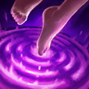

核心裝備
 和諧回音
和諧回音 流水之杖
流水之杖 熾灼魔器
熾灼魔器 蘇瑞亞的戰歌
蘇瑞亞的戰歌 米凱的祝福
米凱的祝福

以下為本站 7.2d 校正後的標準配置；實戰仍需依敵方陣容調整。


技能優先：W > Q > E
施放三次基礎技能後，下一次攻擊敵方英雄或史詩級野怪會造成額外魔法傷害並短暫暈眩；重生時會直接取得完整層數。
對最近的兩名敵人造成魔法傷害，並形成短暫靈氣，讓附近友軍的下一次攻擊附帶額外傷害。
治療索娜與附近生命最低的友軍，並形成靈氣，為接觸到的友軍提供護盾，是持續保排的核心技能。 7.2b 治療量調整為 35/50/65/80。

提高索娜自身跑速並形成靈氣，讓附近友軍獲得跑速，適合帶隊進場、轉線與撤退。
向指定方向連續傳送音波，音波造成魔法傷害並暈眩首次命中的敵人，傳播範圍內其他敵人也會受到緩速。 7.2b 冷卻時間調整為 80/75/70 秒。
1技疊層並消耗 → 2技回補護盾 → 3技完成三層 → 強化普攻暈眩英雄 → 利用加速拉開
力量和弦只在攻擊英雄或史詩級野怪時消耗，可先把三層準備好，再抓敵人補刀的固定動作上前暈眩。
4技沿突進路徑施放 → 2技治療護盾主力 → 虛弱敵方爆發核心 → 3技加速全隊拉開 → 1技補充反打傷害
大絕先限制最危險的突進者，不必為了多命中而延遲；二技與虛弱接上即可拖過第一輪爆發。
3技帶隊進入位置 → 1技強化隊友攻擊 → 2技治療並群體護盾 → 被動完成時暈眩關鍵目標 → 4技封鎖狹窄通道
保持在隊伍中央偏後方，讓三種靈氣依序覆蓋主力；力量和弦完成後再決定暈前排或突進者。
利用英勇讚美詩同時傷害兩名最近敵人，並讓附近友軍的下一次攻擊獲得額外傷害。對線不要只為疊層連續空放技能，先觀察力量和弦是否準備完成；被動強化普攻只在攻擊英雄或史詩級野怪時消耗，可在敵人補刀時打出短暫暈眩，再用堅毅詠嘆調回補並替隊友套盾。
跟著隊伍移動時用迅捷奏鳴曲提供跑速，先到河道與物件區建立視野。索娜身板很脆，不要為了讓靈氣覆蓋所有人而站到隊伍最前方；保持在主力後方，循環一技增傷、二技治療護盾與三技加速。狂舞終樂章會連續向指定方向傳送音波，適合在狹窄入口反開或切斷追擊。
團戰重點是持續施法與維持生存。二技優先照顧被集火的主力，一技在安全距離補充團隊傷害，三技協助追擊或撤退。被動暈眩可留給突進者或關鍵施法英雄；大絕不必只追求命中五人，先控制最危險的進場者，讓隊伍能穩定拉扯更重要。7.2b 大絕冷卻延長，優先控制真正威脅後排的進場者，不要為低價值目標隨意交出。
對局名單是本站依英雄機制與目前配置整理的參考，不等同固定勝率。
輔助調整以團隊承傷、解控與保護主力為優先，不為了單一敵人破壞整套功能裝。
觸發：敵方主要輸出集中在射手、物理刺客或普攻型英雄。
日輪的加冕提供團隊護盾與雙防，讓軟輔先保住主力再繼續施放治療／護盾。
觸發：敵方主要威脅來自法師、AP刺客或大量範圍魔法傷害。
日輪的加冕提供團隊護盾與雙防，能先撐過第一輪範圍爆發。
觸發：敵方硬控能直接抓死己方主力，或你進場後會被連續控制。
標準配置已有米凱、韌性鞋線或其他解控／防先手工具。
提醒：米凱主要替隊友解控；水星彎刀則是物理英雄自我解控，兩者角色不同。
觸發：敵方有大量治療、吸血或回復，讓己方集火很難完成擊殺。
黑魔禁書能由魔法傷害穩定施加重創，適合法師與軟輔處理大量治療。
觸發：己方只有一個主要輸出點，且敵方每波團戰都會集中切入他。
日輪的加冕提供額外即時護盾，讓你有時間接後續治療與保排技能。
提醒：保排調整看己方陣容，不是看到敵方刺客就把所有功能裝都換成防裝。
7.2b 平衡更新（v79.4）：二技治療 45/60/75/90→35/50/65/80，大絕冷卻 80/70/60秒→80/75/70秒；續航與團戰控制頻率下修。｜7.2a 輔助路第四批正式攻略：技能名稱與重製後力量和弦、靈氣及狂舞終樂章機制依 Riot Games 台灣《激鬥峽谷》索娜英雄頁、4.4c 重製公告、6.1b 與 7.1h 平衡公告校正，版本基準採官方 7.2a 更新公告；出裝、符文、技能順序與對局方向依本站既有輔助資料整合。Tier 維持本站既有輔助路評級。｜v73：套用瑟雷西 v69 輔助固定母版。｜v89 7.2c：依多來源環境資料校正 輔助 Tier，並保留有實戰差異的標準配置。
本站於 2026-08-27 依 Patch 7.2d 重新檢查此配置。 Tier、出裝、符文與對局屬於 Wild Rift Guide 的整理與分析，不是 Riot Games 官方推薦；版本改動後會再依官方公告與實戰資料校正。